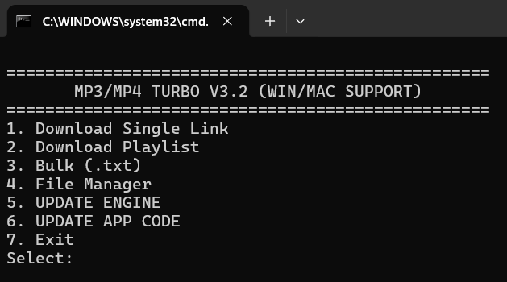
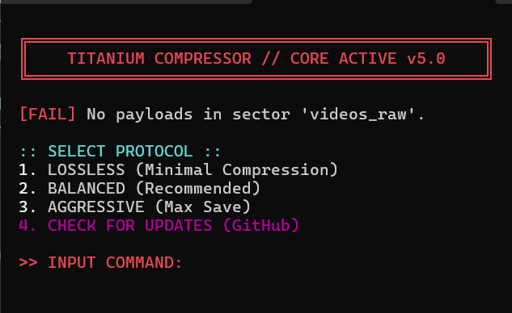
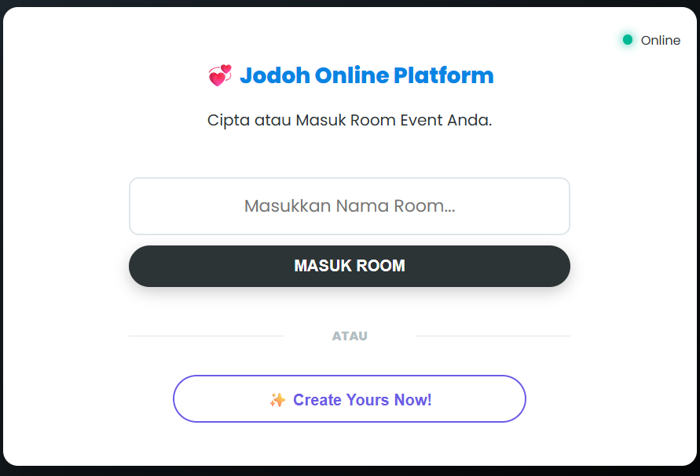
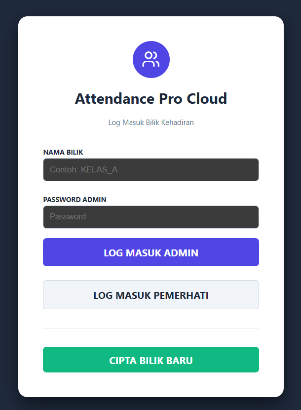
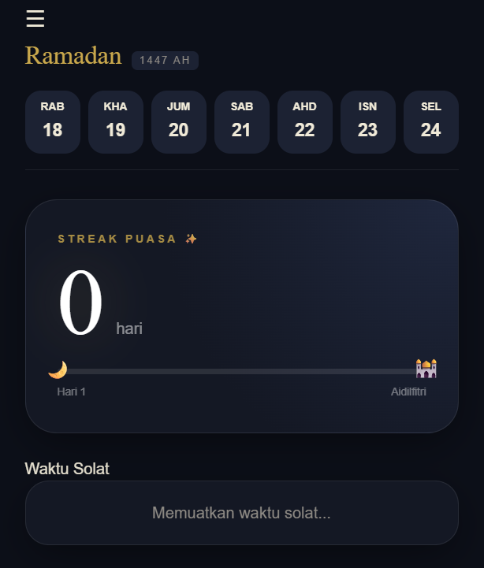
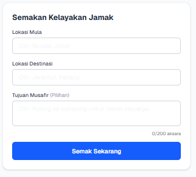

mp4
A system to download a video or series of videos from youtube just in your terminal and it is ads free! Usefull when you want to download YouTube video swiftly. It also can download that as mp3 and raw video (without sound)
View Project

Video Compressor
A system to compress large video files straight from your terminal without losing noticeable quality! Useful when you need to swiftly reduce video sizes for web uploads or tight storage limits. It also allows you to adjust the resolution and optimize formats on the fly.
View Project

Online Pairing
A website build for easy to manage activity like secret santa, this website will assign people with opposite gender and it's like round table and its also has feature to have a bias couple. It is fun to play with your friends!
View Project

Attendance Pro
Website to easy track and record attendance rather than use tradisonal way which is, use paper and so on. But there still have some minor bug (add student).
View Project

Ramadan Streak
A simple web application to track and record days of fasting in ramadan mubarak, easy to track break fasting and the use of streak just for motivation for the individual and also have some diary feature and checklist to stay stick with the sunnah and for medication.
View Project

Jamak Identifier
Build to help muslims find a way if their "niat" is acceptable to have a jamak with two condition which are "niat" itself and the distance must be more than 2 marhalah @ 81KM. This still have minor bug on gemini API for clarifying the "niat".
View Project